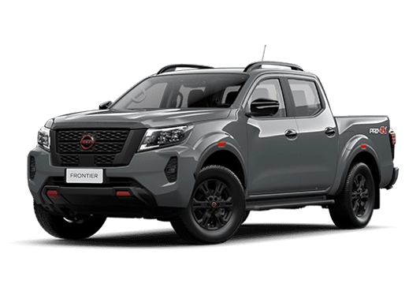

Nissan Frontier

Motor: Versão atual brasileira utiliza motor 2,3 L Bi-Turbo diesel
com transmissão automática de 7 marchas e tração 4×4 nas versões topo.
No Brasil para o modelo 2026, o preço sugerido da versão de entrada (Attack AT 4×4) parte de R$ 277.590.
Versões mais completas (Platinum AT 4×4 e PRO-4X AT 4×4) ficam em torno de R$ 317.990.
Por ser uma picape com propósitos “pesados”, ela já sai projetada para uso exigente — carga, 4×4, terrenos difíceis.
Voltar